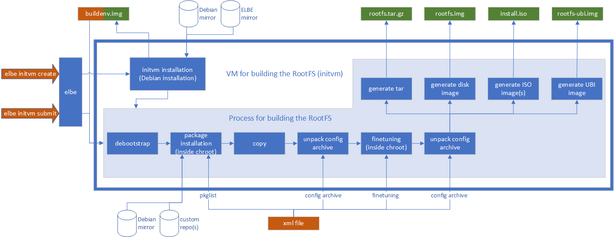

Dashboard
InitVM Instances
?
Each VM is a QEMU-backed Debian virtual machine running the ELBE build daemon.
Start — boot the QEMU process and set it as the active VM for builds.
Stop — shut down the QEMU process.
Remove — permanently delete the VM directory (only when stopped).
The active VM (last started) is used by the Submit and Projects pages.
Projects
ELBE Daemon Projects
?
Projects managed by the ELBE SOAP daemon running inside the initvm.
Create — register a new empty project slot in the daemon.
Set XML — assign an ELBE XML file to configure the build.
Build — trigger a build inside the initvm (image generation).
Files — list the build output files stored in the initvm.
↓ All — download all output files to your local workspace.
Del — remove the project from the daemon.
⚡ For a simpler one-click flow, use Submit Build instead — it does Create → Set XML → Build → Download automatically.
| Build Dir | Name | Version | Status | Actions |
|---|
Submit Build
Upload & Submit XML
?
One-click build: select an ELBE XML project file and submit it to the initvm.
This automatically creates a project, uploads the XML, runs the build, and downloads the output files when done.
Track progress in the Local Builds tab.
ELBE Projects
Available Projects
Sources
Source Projects
?
Application source code found under the sources/ directory.
Each folder here is a buildable application (e.g. a C project with a Makefile).
Use Create Package to generate a debian/ skeleton so it can be built as a .deb package.
Application source code repositories found under the sources directory.
Packages
Debian Packages
?
Package definitions found under the packages/ directory.
Each package has a debian/ directory with control, changelog, and rules files.
Build .deb — compile and produce .deb + source packages in dist/.
Add to APT Repo — copy the built .deb into a local APT repository.
Clean — remove build artefacts.
Debian package definitions found under the packages directory.
Local Builds
Submit Jobs
?
Background build jobs submitted via Submit Build.
Each job runs elbe initvm submit in the background.
Log — stream the live build output.
↓ Files — recover build artefacts from the initvm (useful if build failed partially).
🧹 Cleanup — delete the project from the initvm after recovering files.
Track running and completed elbe submit processes.
Build Outputs
?
Directories containing the output files from completed builds.
Each build creates a folder under builds/ with disk images, logs, and other artefacts produced by ELBE.
Simulators
QEMU Simulators
Configure and run QEMU virtual machines using images from Local Builds.
APT Repositories
Configured Repositories
Maintainers
Maintainers are used in debian/control, debian/changelog,
GPG key generation, and APT repository signing. Each APT repo and package selects a maintainer.
Settings
ELBE Configuration
QEMU Configuration
Build Settings
ELBE Workflow
How ELBE Builds a Root Filesystem
ELBE (Embedded Linux Build Environment) is a tool developed by Linutronix for building customized Debian-based root filesystems for embedded targets. It uses an XML project file as the single source of truth, describing the target architecture, Debian mirror, package list, partition layout, and post-install fine-tuning steps.
The build runs inside a dedicated QEMU virtual machine called the
initvm. This isolation keeps the host system clean and
makes cross-compilation straightforward — ELBE uses
qemu-user-static internally to run foreign-architecture
binaries inside the build chroot.

Build steps
- elbe initvm create — provisions the initvm: installs a minimal Debian system inside a QEMU disk image and starts the ELBE SOAP build daemon. This step is done once.
- elbe initvm submit — sends the XML project file to the running initvm for building. The initvm then runs the following pipeline:
- debootstrap — bootstraps the base Debian system inside a chroot, using the configured Debian mirror.
- Package installation — installs the packages listed in
<pkg-list>, including packages from custom APT repositories (e.g. the local flat repo served by this UI). - copy / unpack config archive — copies files and configuration archives into the chroot.
- finetuning — runs post-install commands inside the
chroot (e.g.
update-grub,systemctl enable). - Image generation — packages the rootfs into the
requested output format: tarball (
rootfs.tar.gz), raw disk image (rootfs.img), ISO, or UBI image.
In this demo project the XML files live in
projects/elbe-demo-projects/ and can be submitted directly
from the Submit Build page. Custom packages are built
in the Packages page, published through the
APT Repos page, and referenced in the XML via the local
APT repository URL.
Official ELBE documentation
Full documentation, XML schema reference, and community resources at the ELBE project website.
About
elbe-ui
A web-based management interface for
ELBE
(Embedded Linux Build Environment). Wraps the elbe CLI and
related tooling — initvm lifecycle, image builds, Debian packaging, local
APT repositories, and QEMU simulation — into a single browser interface.
Part of a proof-of-concept workspace that demonstrates how to build customized Debian-based root filesystems for embedded targets using ELBE, from source code to a bootable image.
Version
0.1.0
Backend: Python · FastAPI | Frontend: Vanilla JS SPA
Source code
Available on GitHub under the devfilipe organization.